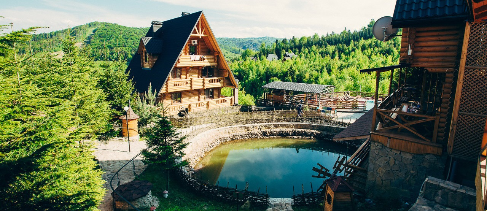

Ми пропонуємо Вам чудовий відпочинок в живописному місці карпатських
гір - смт. Ворохта, розташованому на території Карпатського природно-національного парку,
у верхів'ї річки Прут на висоті 850 м над рівнем моря, в 10 км від знаменитої гори "Говерла" і в 18 км
від гірськолижного курорту "Буковель".

на території однойменного Національного природнього парку відвідаємо найбільше та найвисокогірніше
озеро Українських Карпат – Синевир! Місцеві жителі переповідають давню легенду, що нібито мальовниче
озеро утворилося від потоку сліз графської доньки Синь, на місці, де її коханого, простого верховинського
пастуха Вира, було вбито камінною глибою за наказом підступного графа…Правда це чи ні ми зможе переконатись відвідавши екскурсію «Таємниця Синевиру».

До низки наших турів до Закарпаття входить відвідування гірських сироварень, знайомство з процесом та секретами
виробництва різних видів сиру, дегустація сирних смаколиків, екскурсії по фермах. Наші популярні тури з присмаком сиру:
«Сиро-винний тур Закарпаттям» (2 дні / 1 ніч);
«10 родзинок Закарпаття» (3 дні / 2 ночі);
«На Бринзу до Рахова» (2 дні / 1 ніч);
тур-відпустка «Довкола Карпат за 7 днів» (7 днів / 6 ночей) не лишають байдужими навіть найприскіпливіших гурманів.
5 cироварень Закарпаття